Loop Engineering：从 Prompt 到系统自主 #
摘要：2026 年 6 月，AI Agent 领域发生了一场静悄悄的范式转移。Peter Steinberger（OpenClaw 作者）发了一条推文——“你不应该再手动给 coding agent 写 prompt 了，你应该设计让 agent 自动跑的 loop”——这条推文获得了 830 万浏览，引爆了整个行业。Loop Engineering 从此成为 AI Agent 开发的核心技能。本文将从概念、架构、模式、系统实现和最佳实践五个维度，全面拆解 Loop Engineering。
📊 插图索引 #
| 编号 | 插图 | 说明 |
|---|---|---|
| 图 1 | 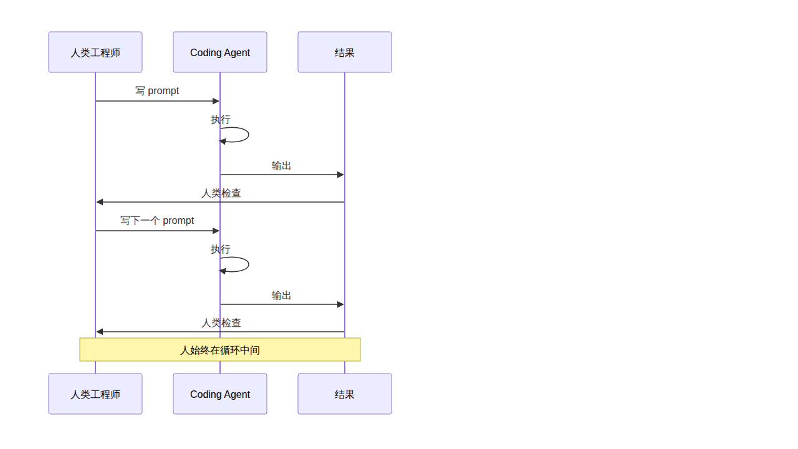 |
传统 Prompt 工作模式 vs Loop Engineering |
| 图 2 | 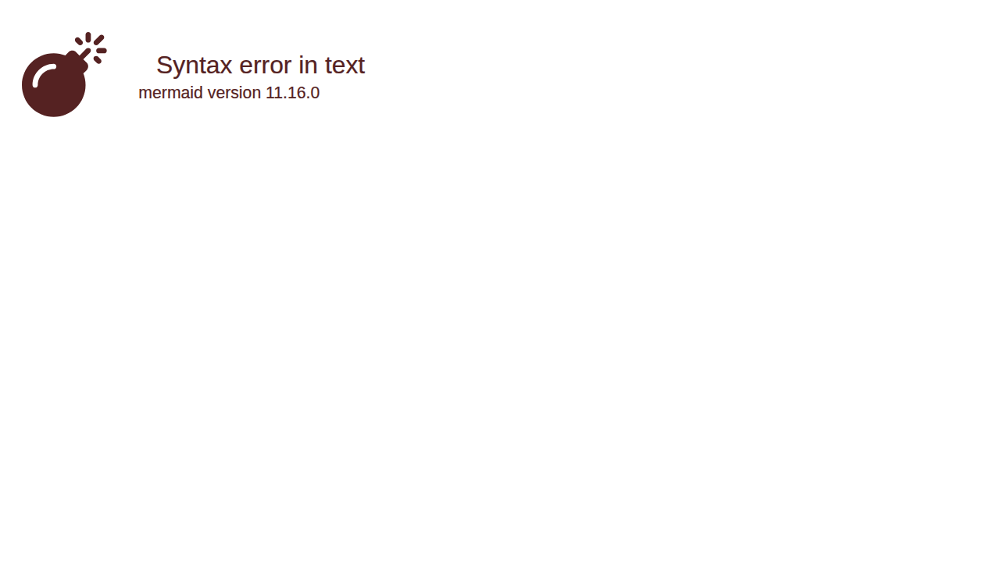 |
Loop Engineering 自动循环架构 |
| 图 3 | 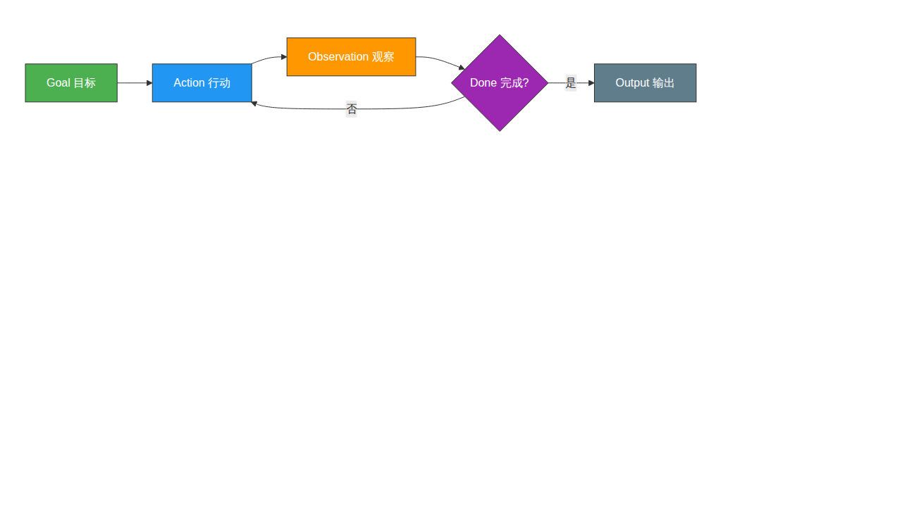 |
Agent Loop：目标→行动→观察→判断 |
| 图 4 | 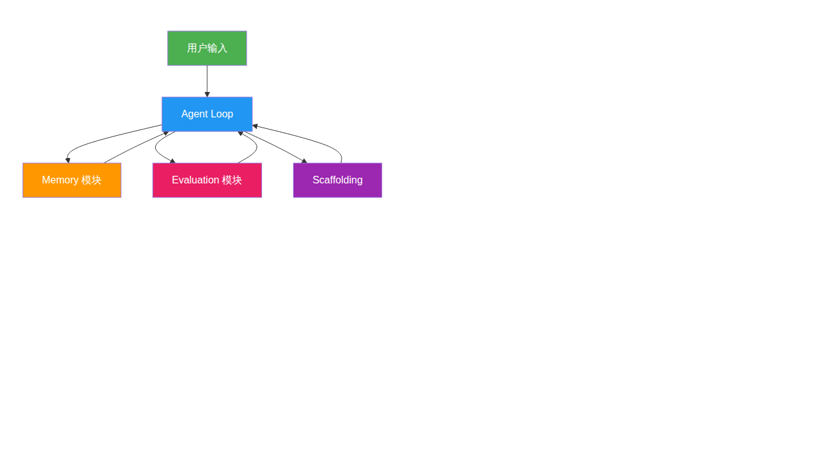 |
加入记忆、评估和脚手架 |
| 图 5 | 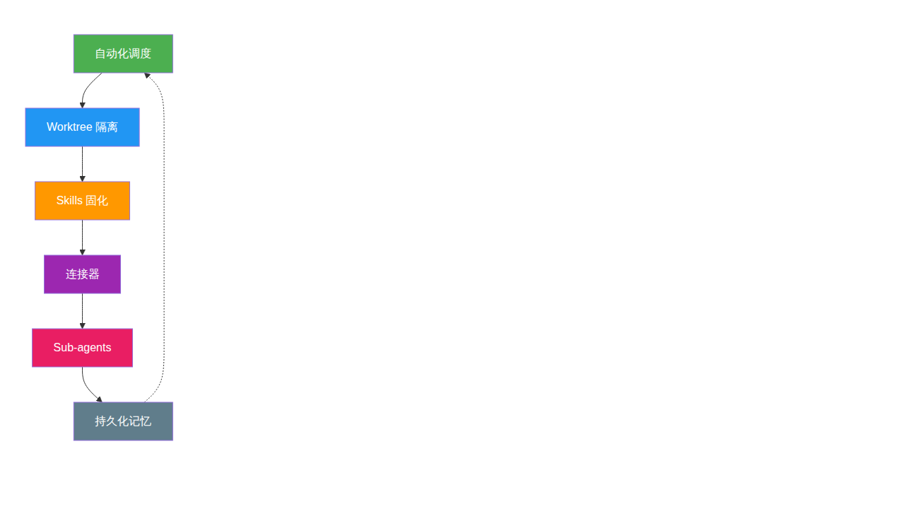 |
Addy Osmani 框架的六大组件 |
| 图 6 | 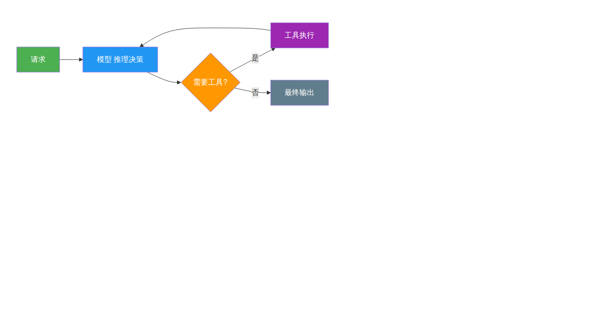 |
基础循环：模型 + 工具 |
| 图 7 | 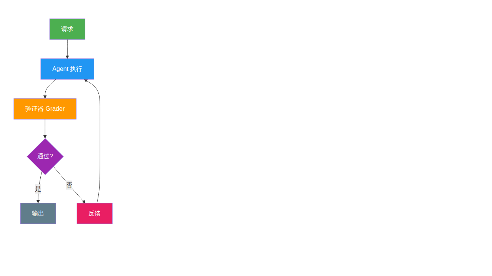 |
验证循环 + Maker-Checker |
| 图 8 | 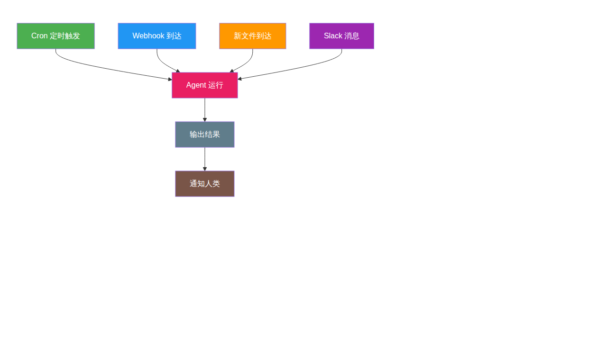 |
事件驱动循环 |
| 图 9 | 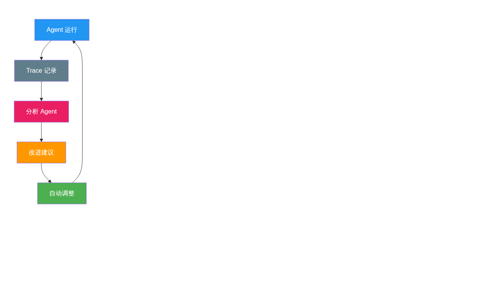 |
爬坡循环：自我改进 |
| 图 10 | 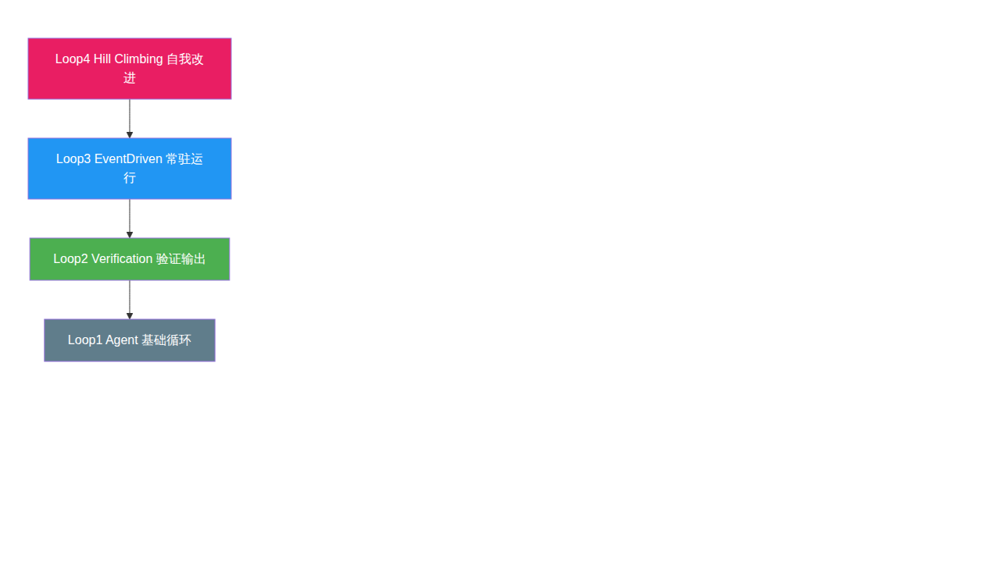 |
Loopcraft：堆叠 loop 的艺术 |
| 图 11 | 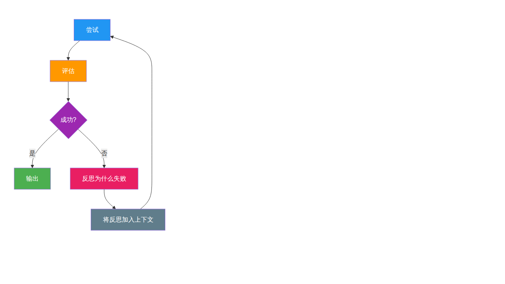 |
失败后自我反思模式 |
| 图 12 | 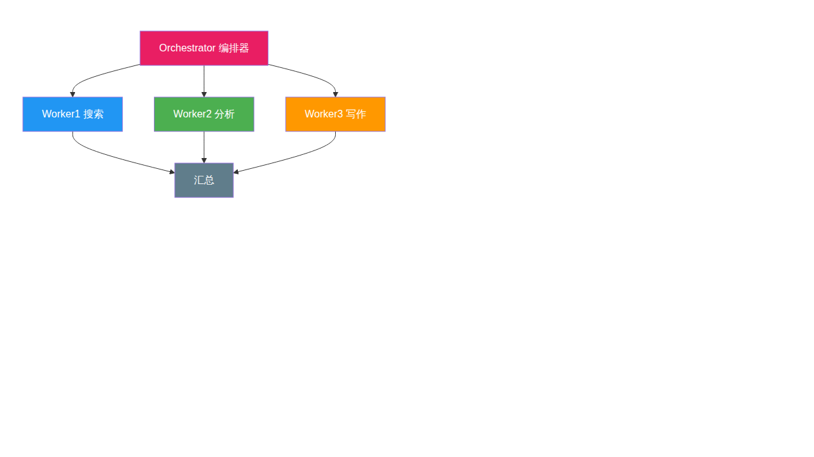 |
编排器调度多个 Worker |
| 图 13 | 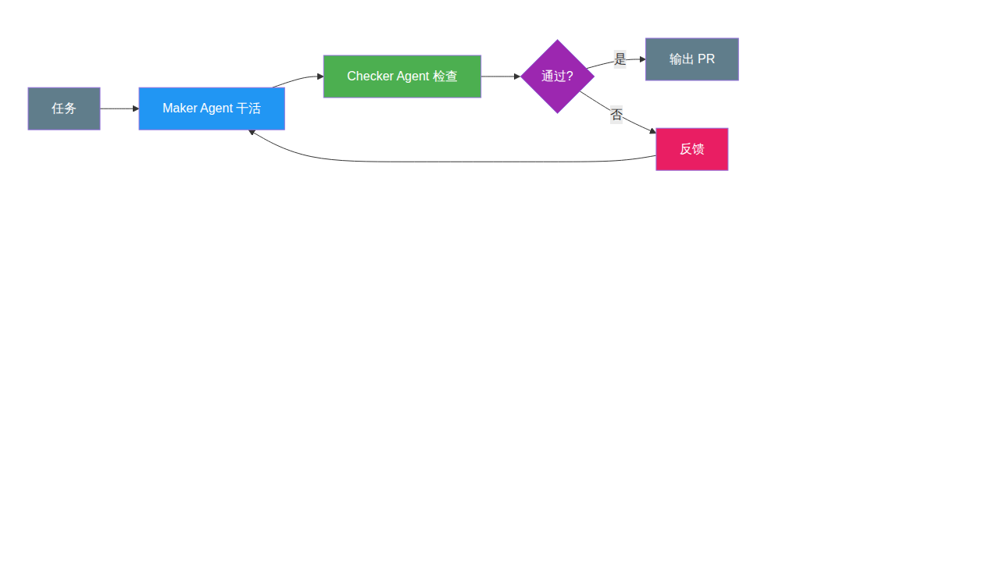 |
生产环境最主流模式 |
| 图 14 | 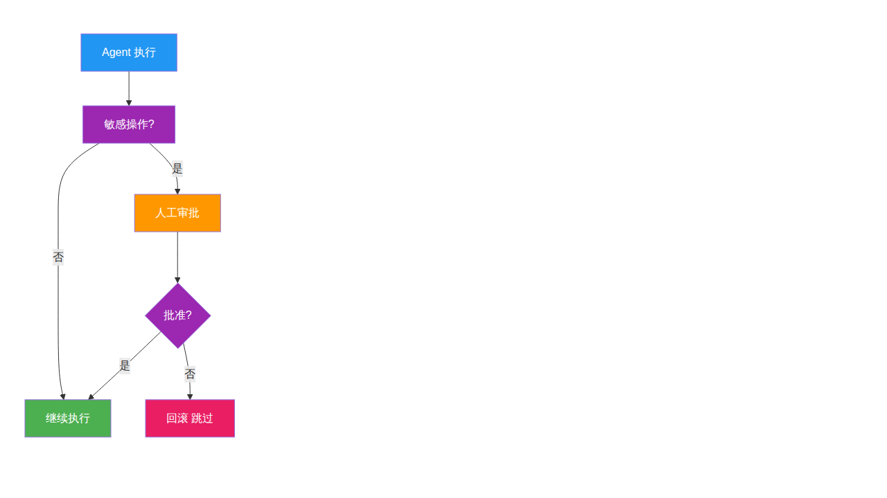 |
敏感操作人工审批流 |
| 图 15 | 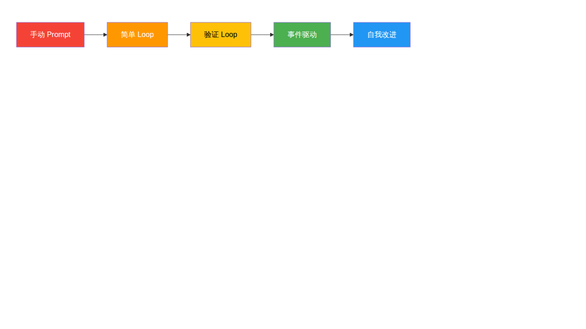 |
从手动 Prompt 到自我改进 |
一、引言：为什么 Loop Engineering 在 2026 年爆发 #
1.1 一句话定义 #
Loop Engineering 就是：不再自己手动给 Agent 写 prompt，而是设计一个系统，让系统自动给 Agent 发 prompt、检查结果、决定下一步。
用 Addy Osmani 的话说：
“Loop engineering is replacing yourself as the person who prompts the agent. You design the system that does it instead.”
1.2 引爆点：2026 年 6 月的十天 #
| 日期 | 人物 / 来源 | 关键言论 | 影响 |
|---|---|---|---|
| 2026-06-07 | Peter Steinberger (@steipete) | “You shouldn’t be prompting coding agents anymore. You should be designing loops that prompt your agents.” | 830 万浏览，引爆讨论 |
| 2026-06-08 | Boris Cherny（Anthropic Claude Code 负责人） | “My job is to write loops.” | 行业领袖背书 |
| 2026-06-07 | Addy Osmani | 发布博文 “Loop Engineering”，首次系统命名 | 广泛传播，奠定概念框架 |
| 2026-06-12 | swyx（Latent Space） | “Loopcraft: The Art of Stacking Loops” | 提出"堆叠 loop"概念 |
| 2026-06-16 | LangChain 官方博客 | “The Art of Loop Engineering”，四层 loop 框架 | 框架化、工程化 |
1.3 范式转移的三段演进 #
Prompt Engineering (2022-2024)
↓
Agent Harness Engineering (2025)
↓
Loop Engineering (2026)
| 阶段 | 核心问题 | 人的角色 | 典型做法 |
|---|---|---|---|
| Prompt Engineering | 怎么写一个好 prompt？ | 手写每一条 prompt | 写 prompt → 等回复 → 写下一条 |
| Harness Engineering | Agent 需要什么环境才能工作？ | 搭建工具链、上下文、安全边界 | 配工具、设上下文、加 guardrails |
| Loop Engineering | 什么循环让 Agent 持续工作，何时停？ | 设计系统，让系统自动 prompt Agent | 自动发现 → 分派 → 验证 → 记忆 → 下一轮 |
1.4 从"人用工具"到"系统用人" #
过去两年的工作模式是这样的：
Loop Engineering 要做的，是把人从循环中间抽出来：
核心区别：从"人逐条 prompt"变成"人设计系统，系统自动跑"。
二、核心概念拆解 #
2.1 Agent Loop 的本质 #
Agent Loop 是最基本的循环：模型调用工具，观察结果，再调用，直到任务完成。
为什么需要循环？因为长程任务无法在一次 LLM 调用中完成。一个 LLM 调用的输出长度有限（通常几万字），而一个真实的工程任务（“修复这个 bug 并更新相关测试”）需要多步操作。
Agent Loop 的标准模式：
这个循环在学术上最早可追溯到 ReAct 模式（Princeton + Google，2022），它证明了"Reason + Act"交替比纯推理或纯行动都更有效。
2.2 Agent Loop 的三层复杂度（Oracle 框架） #
Agent Loop 不是一个固定模式，它随着记忆、工具、脚手架的加入而进化：
Level 1：简单工具调用循环
# 最基础的 agent loop
def simple_agent_loop(prompt, tools):
messages = [{"role": "user", "content": prompt}]
while True:
response = model.chat(messages, tools=tools)
if not response.tool_calls:
return response.content
# 执行工具调用，将结果加回上下文
for tool_call in response.tool_calls:
result = execute_tool(tool_call)
messages.append({"role": "tool", "content": result})
- 没有持久化记忆，没有外部状态
- 循环的原因：工具结果必须反馈给模型，模型才能给出最终答案
Level 2：加入记忆、评估和脚手架
Level 3：完整系统集成
Agent 不再是孤立的 loop，而是整个系统的一部分——接入搜索引擎、数据库、API、CI/CD 管道等。
2.3 Loop Engineering vs Harness Engineering #
这是两个密切相关但不同的概念，经常被混用，但理解区别很重要：
| 维度 | Harness Engineering | Loop Engineering |
|---|---|---|
| 关注点 | 单个 Agent 运行的环境 | 多个 Agent/多轮次的时间编排 |
| 核心问题 | “Agent 需要什么才能工作？” | “什么循环让它持续工作，何时停？” |
| 范围 | 一个 Agent 的上下文、工具、安全 | 发现工作 → 分派 → 验证 → 记忆 → 下一轮 |
| 类比 | 给一个 Agent 造"身体" | 造"工厂"——自动运转 |
| 典型原语 | 工具定义、上下文窗口、guardrails | /goal、/loop、cron、heartbeat、sub-agent |
| 时间维度 | 单次运行 | 跨多次运行，持续自主 |
用一句话总结：Harness 是一个 Agent 住在哪里；Loop 是什么时候启动 Agent、给它什么任务、怎么处理它的输出。
2.4 一个完整 Loop 的六大要素 #
Addy Osmani 提出了一个 Loop 需要的六个核心组件（外加一个记忆层）：
| 要素 | 作用 | 具体例子 |
|---|---|---|
| ⏰ 自动化调度 | 定时发现工作、分派任务，让 loop 真正跑起来 | heartbeat、cron、webhook |
| 🌿 Worktree 隔离 | 多个 Agent 并行工作时不冲突 | git worktree，每个 sub-agent 独立分支 |
| 📋 Skills | 把项目知识固化，Agent 不用每次都猜 | SKILL.md 文件，定义了项目规范和约定 |
| 🔌 连接器 | 接入现有工具链 | MCP servers、GitHub、Slack、Linear |
| 🤖 Sub-agents | 一个干活（Maker），一个检查（Checker） | .claude/agents/ 或 .codex/agents/ |
| 💾 持久化记忆 | 跨轮次记录"做了什么"和"下一步做什么" | progress.md、Linear 看板 |
关于记忆的真相：模型每次运行之间会遗忘一切，所以记忆必须在磁盘上，不能在上下文里。Agent 会忘，Repo 不会。这是所有长程 Agent 依赖的同一个技巧。
三、Loop 的分层架构 #
LangChain 官方博客将 Loop 分成了四层，从基础自动化到自我改进，层层递进：
3.1 Loop 1：Agent Loop（基础循环） #
这是最基本的 loop：模型 + 工具 → 循环调用直到完成。
以 LangChain 的 create_agent 为例，选一个模型、插上工具，你就有了一个能工作的 agent loop。
3.2 Loop 2：Verification Loop（验证循环） #
Agent 能干活了，但它第一次的输出不一定正确。当一致性很重要时，需要在 Agent 外面包一个验证循环。
验证器可以是：
- 确定性检查：运行测试、lint、链接检查等
- LLM-as-judge：用另一个 LLM 按 rubric 评分
关键原则：干活的 Agent 和检查的 Agent 必须分离。自己检查自己永远觉得没问题。这就是著名的 Maker-Checker 模式。
# LangChain 的 RubricMiddleware 示例
from langchain.agents import create_agent
from langchain.middleware import RubricMiddleware
agent = create_agent(model="gpt-4o", tools=[...])
# 加一个验证层：每次 agent 输出后自动检查
agent = RubricMiddleware(
agent,
rubric=[
"所有链接能正常打开",
"CI 检查通过",
"diff 范围不超过请求范围"
],
max_retries=3
)
3.3 Loop 3：Event-Driven Loop（事件驱动循环） #
Agent 不再是你手动调用的东西，而是系统里的常驻组件。
OpenClaw 的 heartbeat 机制就是这个模式的典型案例：定时检查邮箱、日历、通知，有重要发现才通知用户，没事就保持安静。
3.4 Loop 4：Hill Climbing Loop（爬坡循环） #
前三层 loop 自动化了工作，第四层自动化了改进。
每一次 Agent 运行都产生 trace（模型做了什么、调了什么工具、grader 给了什么反馈）。这些 trace 里藏着高价值信号。Hill Climbing Loop 用一个分析 Agent 去读这些 trace，自动发现哪些地方工作得不好，然后自动改写配置——调整 prompt、更换工具、优化 grader。
这是价值最高的一层，因为它让系统自我改进。
3.5 四层 Loop 的叠加关系 #
swyx 称之为 “Loopcraft：堆叠 loop 的艺术”。四层 loop 不是互相替代，而是层层叠加：
swyx 原话：“The entire game of the next century is to be able to stack loops as effectively as possible.”
四、经典 Loop 模式 #
Loop Engineering 不是凭空发明的，它建立在多年的研究积累之上。以下是经过验证的经典模式：
4.1 ReAct（Reason + Act） #
- 来源：Princeton + Google，2022 年论文
- 核心思想：推理和行动交替进行
- 结构：Thought → Action → Observation → Thought → …
Thought: 我需要搜索 XX 的最新信息
Action: search["XX 2026"]
Observation: [搜索结果]
Thought: 根据结果，我需要进一步查阅...
Action: fetch["https://..."]
Observation: [页面内容]
Thought: 现在我有了足够信息，可以写总结了
这是所有 Agent Loop 的学术先驱。
4.2 Reflexion #
- 核心思想：失败后自我反思，带着反思重新尝试
- 结构：尝试 → 评估 → 反思（生成语言反馈）→ 带着反思重新尝试
与简单重试的区别：Reflexion 会生成语言化的反思（“我上次的搜索关键词太宽泛了”），而不只是"再试一次"。
4.3 Evaluator-Optimizer #
- 核心思想：评估器和优化器两个角色反复迭代
- 与 Maker-Checker 的区别：Evaluator-Optimizer 更关注质量提升（如代码性能优化），Maker-Checker 更关注正确性验证（如代码是否能跑通）
4.4 Orchestrator-Workers #
- 核心思想：一个编排器（Orchestrator）将任务拆解、分派给多个专业 Worker
- 适用场景：复杂的多子任务问题
4.5 Maker-Checker（生产环境主导模式） #
这是 2026 年 Loop Engineering 中最主流的模式：
铁律：干活的 Agent 和检查的 Agent 必须是不同的，最好用不同的模型。同一个模型检查自己的输出，倾向于轻易放行。
4.6 Ralph Loop #
- 来源：Geoffrey Huntley
- 核心思想：简单粗暴——把同一个 prompt 反复喂给 Agent，直到 spec 满足
- 本质：while (spec 不满足) { 再跑一次 }
- 价值：证明了即使是最简单的 loop，加上终止条件，也能产生远超手动 prompt 的效果
4.7 /goal 原语
#
- 来源：Claude Code / OpenAI Codex
- 核心思想：定义一个可验证的终止条件，Agent 持续工作直到条件满足
- 关键：由独立的小模型检查条件，不是干活的 Agent 自己检查
/goal "test/auth 所有测试通过 且 lint 无错误"
Agent 会跨多轮工作，每轮结束后独立模型检查条件，满足才停。支持 pause 和 resume。
五、实现 Loop Engineering 的系统 #
2026 年的好消息是：这些 loop 原语不再是你自己写的一堆 bash 脚本了，它们已经内建在产品里。
5.1 Claude Code（Anthropic） #
| 原语 | 说明 |
|---|---|
/loop |
按 cadence 重复运行 prompt |
/goal |
运行直到满足可验证的终止条件，独立模型检查 |
| 子 Agent | .claude/agents/ 目录下定义，支持 agent teams |
| Skills | SKILL.md 文件，自动匹配或手动 $skill-name 调用 |
| Hooks | Agent 生命周期各阶段自动触发 shell 命令 |
| Worktree 隔离 | --worktree 或 isolation: worktree |
| GitHub Actions | 整个 loop 推到 CI 上跑，合上电脑也能继续 |
5.2 OpenAI Codex #
| 原语 | 说明 |
|---|---|
| Automations 面板 | 选项目、写 prompt、设 cadence、选环境；发现问题的跑到 Triage 收件箱，没发现的自动归档 |
/goal |
同 Claude Code，跨轮次工作直到条件满足，支持 pause/resume |
| Subagents | .codex/agents/ 目录下 TOML 定义 |
| Agent Skills | SKILL.md 格式，$ 调用或自动匹配 |
| Worktree | 每个 thread 内建 worktree |
| Connectors/MCP | 接入外部工具 |
5.3 OpenClaw #
| 原语 | 说明 |
|---|---|
| Heartbeat | 定时心跳，可配置检查任务（邮箱、日历、通知等） |
| Cron | 精确定时任务，支持 at/every/cron 三种调度 |
| Sub-agent 分派 | sessions_spawn 创建隔离子任务，支持 Maker-Checker 模式 |
| Memory 持久化 | MEMORY.md + memory/*.md + heartbeat-state.json |
| 多渠道连接器 | DingTalk、Discord、WhatsApp、Telegram 等 |
5.4 系统对比表 #
| 能力 | Claude Code | OpenAI Codex | OpenClaw | LangChain |
|---|---|---|---|---|
| 定时调度 | /loop, cron, hooks, GitHub Actions |
Automations 面板, 调度 | Heartbeat, Cron | Fleet schedules, cron |
| 条件循环 | /goal |
/goal |
—（可自定义） | RubricMiddleware |
| 子 Agent | .claude/agents/ |
.codex/agents/ (TOML) |
sessions_spawn |
Multi-agent |
| Skills | SKILL.md | SKILL.md | SKILL.md | — |
| Worktree 隔离 | ✅ | ✅ | —（可扩展） | — |
| MCP 连接器 | ✅ | ✅ | ✅ | ✅ |
| Trace 分析/自我改进 | — | — | — | LangSmith Engine |
| Human-in-the-loop | — | — | ✅（审批流） | ✅（原生支持） |
5.5 框架层：LangChain #
LangChain 提供了实现四层 loop 的完整工具链：
- Loop 1：
create_agent(model, tools)— 基础 agent - Loop 2：
RubricMiddleware/after_agenthook — 验证 - Loop 3：Fleet channels + schedules — 事件驱动
- Loop 4：LangSmith Engine — trace 分析，自动优化
5.6 云平台 #
| 平台 | 支持能力 |
|---|---|
| Google Vertex AI | Loop agent pattern、Multi-agent loop agent pattern、终止条件、迭代优化 |
| Databricks | Custom Agents 支持单/多 Agent loop + human-in-the-loop |
| AWS Bedrock | Agent 编排 + 循环工作流 |
六、设计模式与最佳实践 #
6.1 Maker-Checker 分离 #
这是 Loop Engineering 中最重要的设计决策。
❌ 错误做法：同一个 Agent 写完代码，自己检查
→ 模型倾向于放过自己的输出
✅ 正确做法：
Maker Agent（可用较强的模型）负责干活
Checker Agent（可用不同模型）负责检查
→ 不同的指令、不同的视角，能发现 Maker 遗漏的问题
这个模式也叫做 LLM-as-judge。Checker 可以是：
- 另一个 LLM Agent
- 确定性程序（测试、lint、构建）
- 人工审批
6.2 终止条件设计 #
终止条件是 Loop 安全的生命线。
| ❌ 不好的终止条件 | ✅ 好的终止条件 |
|---|---|
| “跑 10 轮就停” | “test/auth 所有测试通过且 lint clean” |
| “写到满意为止” | “PR 通过 CI，所有 link 能打开” |
| 没有终止条件 | “progress.md 中记录的 5 个 issue 都 closed” |
关键原则：
- 用可验证的条件，不要用模糊的主观判断
- 由独立模型/程序检查，不要让干活的 Agent 自己判断
- 设置最大轮数兜底（如 max_iterations=20），防止无限循环
6.3 Token 成本控制 #
Loop 的 token 消耗是手动 prompt 的数倍甚至数十倍。控制手段：
max_iterations：硬性上限- spend cap：费用上限
- 分层模型：Checker 用便宜的小模型，Maker 用强模型
- Skills 固化：减少重复解释的 token
- 精简上下文：只传必要的信息
6.4 Human-in-the-loop #
即使在自主 loop 中，也需要人工审批的节点：
典型需要人工审批的场景：发送邮件、发布到生产环境、删除数据、对外发布内容。
6.5 状态持久化 #
“Agent 会忘，Repo 不会。”
Loop 跨多次运行，每次运行之间模型上下文是清空的。所以状态必须持久化在磁盘上：
# 示例：用 progress.md 记录进度
$ cat progress.md
## 已完成
- [x] 修复 auth 模块的 token 过期问题
- [x] 更新相关测试用例
## 进行中
- [ ] 更新 API 文档（#42）
## 待处理
- [ ] 检查其他模块是否有同样问题
Agent 每次启动时先读这个文件，就知道之前做了什么、接下来该做什么。
6.6 Worktree 隔离 #
当多个 Agent 并行工作时，文件冲突是最大的失败源。
main branch
├── worktree-1/ ← Agent A 在此修改 auth 模块
├── worktree-2/ ← Agent B 在此修改 UI 模块
└── worktree-3/ ← Checker Agent 在此验证
每个 worktree 有独立的分支和工作目录，互不干扰。
七、挑战与风险 #
7.1 无限循环风险 #
终止条件定义不当 → Agent 永远无法满足条件 → 循环永不停止 → token 费用爆炸。
防护：
- 始终设置
max_iterations兜底 - 终止条件必须是可客观验证的
- Checker 用独立模型/程序
7.2 Token 成本爆炸 #
弱 Loop（无 verifier、无 spend cap）= 烧钱。
一次手动 prompt 可能花 $0.10，一个跑了 20 轮还没停的 loop 可能花掉 $50。
防护：
- spend cap 硬限制
- 分层模型策略
- 监控 token 用量，超阈值自动暂停
7.3 验证器瓶颈 #
“In any loop, the verifier is the bottleneck, not the model.” — AI Builder Club
模型能力已经很强了，真正限制 Loop 质量的是验证器够不够好。一个弱的 verifier 会让垃圾输出通过。
7.4 早期阶段 #
Loop Engineering 的概念在 2026 年 6 月才成型，到现在只有几个月。产品能力仍在快速演进，最佳实践仍在形成中。
7.5 何时不该用 Loop #
Loop 不是万能的。以下场景更适合手动：
| 场景 | 推荐方式 |
|---|---|
| 一次性任务，不会重复 | 手动 prompt，人工检查 |
| 验证成本比人工检查还高 | 直接手动 |
| 需要高度创造性、无明确标准 | 人工 + Agent 辅助 |
| 安全敏感操作，不能有自主决策 | 人工审批每一步 |
八、总结 #
8.1 核心回顾 #
Loop Engineering 的本质可以用三句话概括：
- 从"人用工具"到"系统设计"：不再是人逐条 prompt Agent，而是人设计 loop，让 loop 自动 prompt Agent
- 关键技能不再是写 prompt，而是定义"好"和"完成"：Maker-Checker 分离、终止条件设计、状态持久化
- 产品已经准备好了：Claude Code、Codex、OpenClaw 都内建了 loop 原语，竞争点在于谁能更好地设计 loop
8.2 能力成熟度 #
大部分团队现在在 A→B→C 之间，D 和 E 是前沿。
8.3 2026 年的工程师红利 #
“The shift from ‘prompt the agent’ to ‘design the loop’ is the single biggest force multiplier for engineering teams in 2026.”
模型能力已经足够了，工具也准备好了。真正的问题是：
你还在自己手动 prompt，还是已经设计了让系统自动 prompt 的 loop？
📚 参考文献 #
- Peter Steinberger (@steipete) — “You shouldn’t be prompting coding agents anymore”，Twitter/X，2026-06-07（830 万浏览）
- Boris Cherny (Anthropic) — “My job is to write loops”，Acquired Podcast / Twitter/X，2026-06
- Addy Osmani — “Loop Engineering”，https://addyosmani.com/blog/loop-engineering ，2026-06-07
- Addy Osmani — “Agent Harness Engineering”，https://addyosmani.com/blog/agent-harness-engineering
- Addy Osmani — “Long-Running Agents”，https://addyosmani.com/blog/long-running-agents
- swyx — “Loopcraft: The Art of Stacking Loops”，Latent Space，2026-06-12
- LangChain Blog — “The Art of Loop Engineering”，https://www.langchain.com/blog/the-art-of-loop-engineering ，2026-06-16
- Oracle Developers — “The Agent Loop Decoded: Three Levels Every Agent Engineer Must Know”，https://blogs.oracle.com/developers/the-agent-loop-decoded ，2026-06-11
- Cobus Greyling — “The Core of Loop Engineering”，Medium，2026
- Michael Rouveure (Black Matter VC) — “Loop Engineering: An Honest Verdict”，https://blackmatter.vc/lab/loop-engineering-an-honest-verdict-from-someone-who-actually-runs-agent-loops
- Shirley / AI Builder Club — “Loop Engineering Guide (2026)"，https://www.aibuilderclub.com/blog/loop-engineering-guide-2026
- Tosea.ai — “What Is Loop Engineering? A Complete Guide from Prompt to Harness Engineering (2026)"，https://tosea.ai/blog/loop-engineering-ai-agents-complete-guide-2026
- TrueFoundry — “Loop Engineering at Enterprise Grade”，https://www.truefoundry.com/blog/loop-engineering-enterprise-agent-runtime
- MindStudio — “Loop Engineering vs Harness Engineering”，https://www.mindstudio.ai/blog/loop-engineering-vs-harness-engineering
- Requesty — “Loop Engineering: How to Build AI Agent Loops That Run Themselves”，https://www.requesty.ai/blog/loop-engineering-how-to-build-ai-agent-loops-that-run-themselves
- IBM Think — “What Is Loop Engineering?"，https://www.ibm.com/think/topics/loop-engineering
- Google Cloud Architecture — “Choose a Design Pattern for Your Agentic AI System”，https://docs.cloud.google.com/architecture/choose-design-pattern-agentic-ai-system
- Databricks — “Agent System Design Patterns”，https://docs.databricks.com/aws/en/agents/agent-system-design-patterns
- Simon Willison — “Designing Agentic Loops”，2025-09
- Andrej Karpathy — “autoresearch” 项目（630 行代码，夜间自动发现研究改进点）
- AI Jason — “Loop Engineer: Systemization and Artifacts”（视频）
- Andrew Ng — The Batch Newsletter，2026-06-30（Nested Three-Loop Model + Context Advantage）
- Fareed Khan — “Testing 17 Agentic Loop Engineering Techniques for Reliable AI Agents”，Level Up Coding
- Cobus Greyling — github.com/cobusgreyling/loop-engineering（MIT，生产 Loop 模式 starter kits）
- LangChain — “The Art of Loop Engineering: How to Build Agents That Improve Over Time”（视频），Interrupt Conference 2026-07-23
- Eric Roby — “Loop Engineering: Stop Prompting Agents”，Brain Bytes Substack